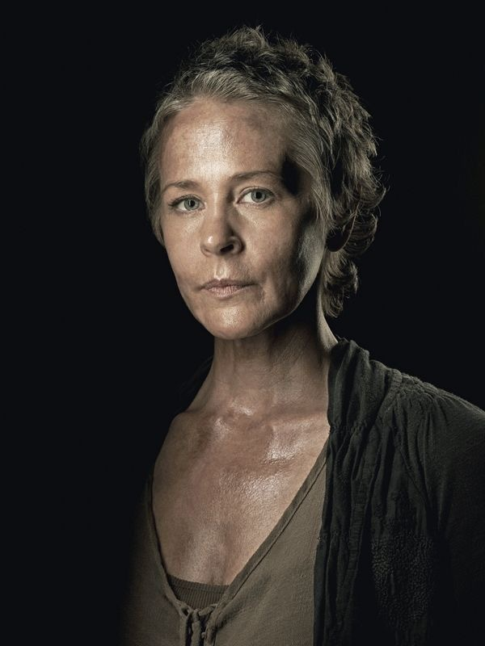
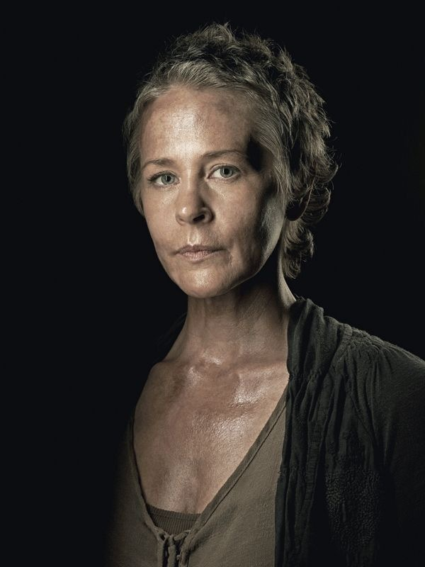
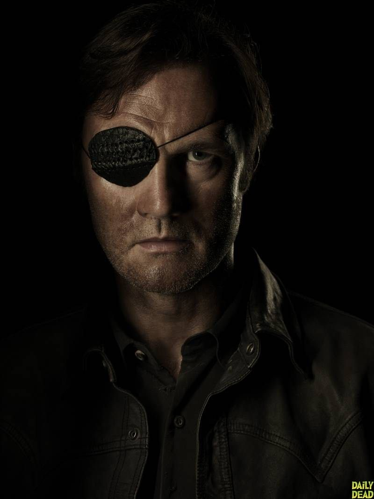
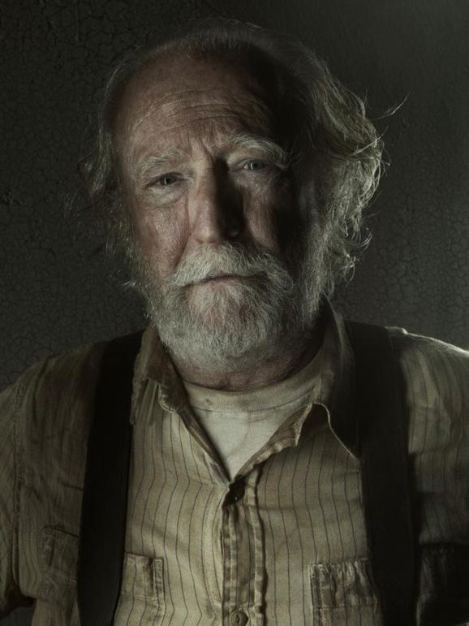
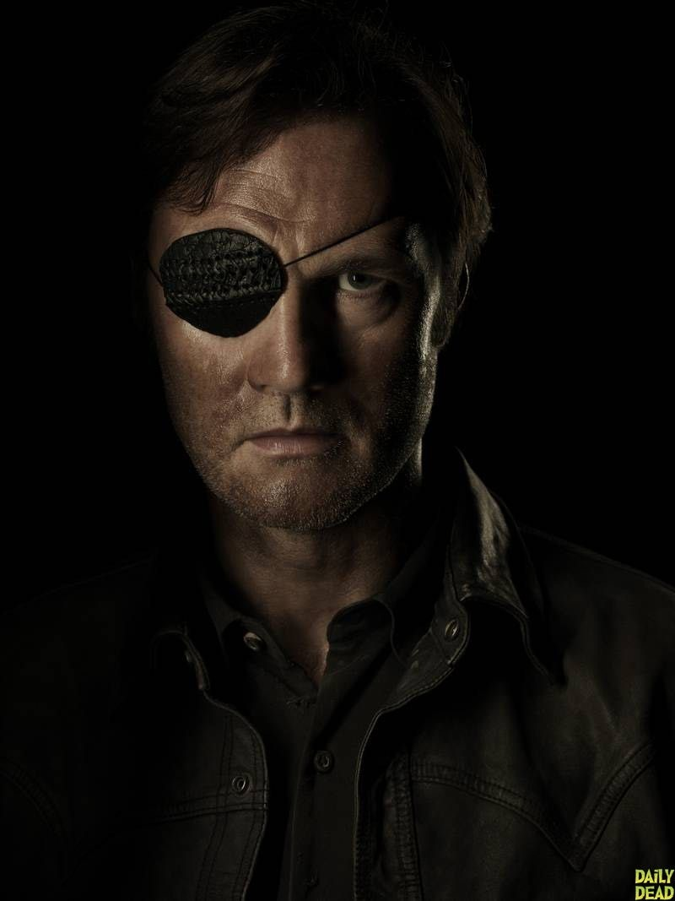
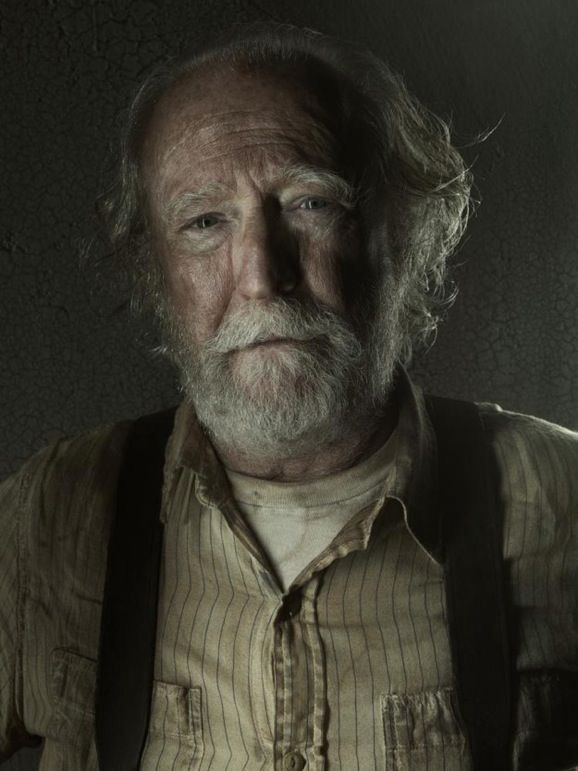
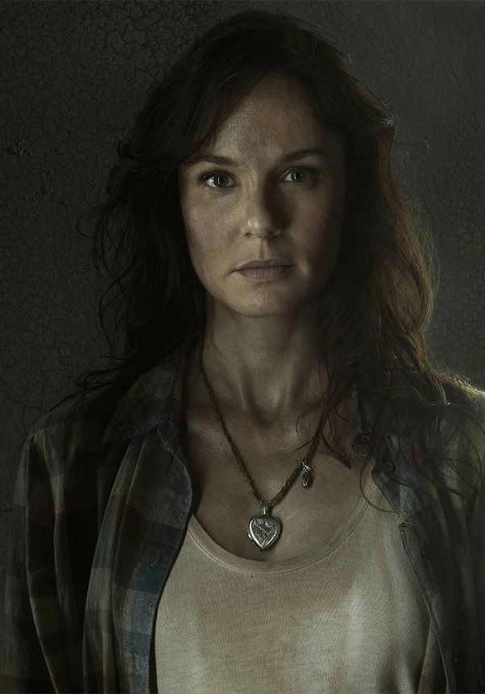
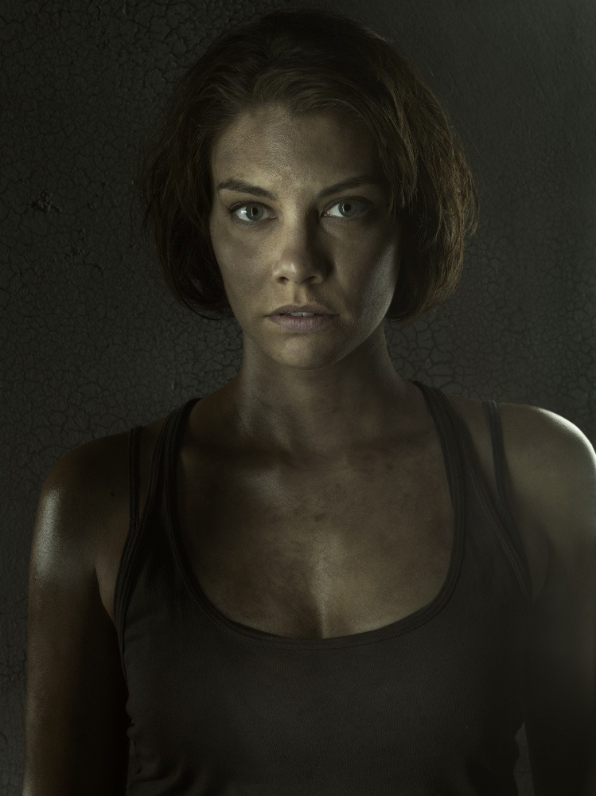
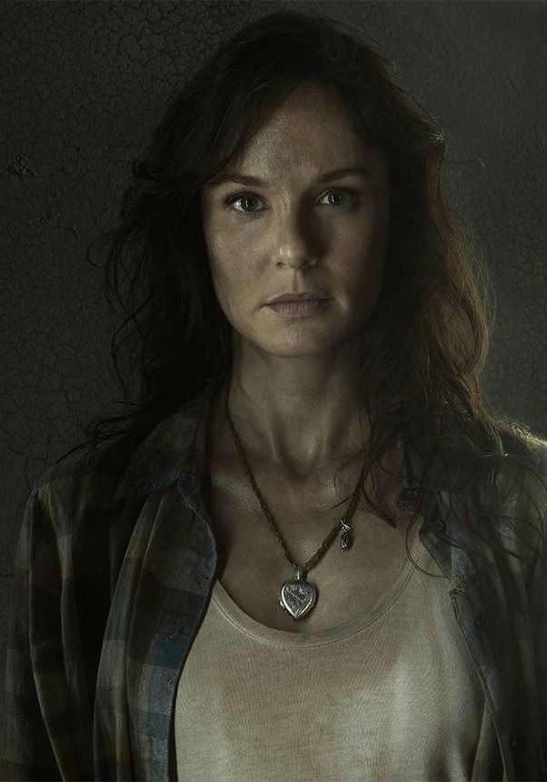
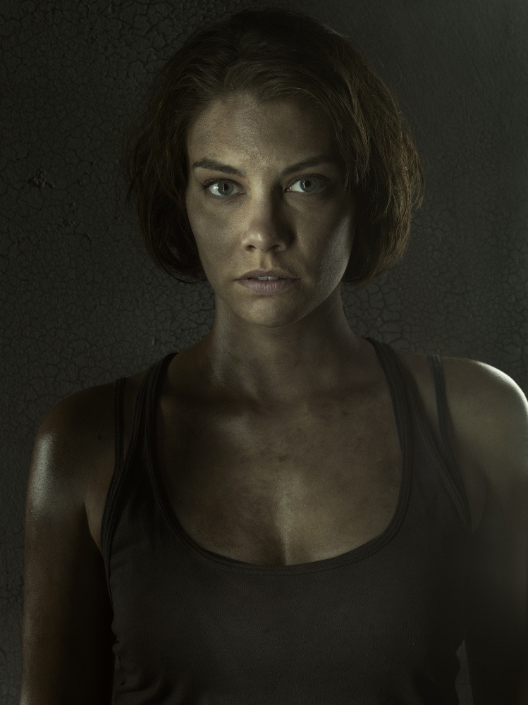

 



 




The flagship series, The Walking Dead, aired from 2010 to 2022 across eleven seasons and tells the story that started it all. It follows Rick Grimes, a sheriff's deputy who wakes from a coma to find the world overrun by "Walkers." He embarks on a journey to find his family and soon discovers that the surviving humans are just as dangerous as the dead. The core theme is the evolution of civilization, asking the question: when society falls apart, what do we hold onto? It follows a core group of survivors as they evolve from a family trying to survive, to an alliance, to a kingdom, and eventually to a nation at war, delivering a gritty, emotional experience focused on the psychological toll of the apocalypse. The first spin-off, Fear the Walking Dead, aired from 2015 to 2023 across eight seasons and offers a different perspective by showing the beginning of the outbreak in Los Angeles. While the main show starts after the world has already fallen, this series shows society collapsing in real-time, following a blended family trying to navigate the chaos when the government and infrastructure are still barely functioning. It explores the unraveling of civilization, capturing the confusion and denial of the early days, and examines how ordinary people adapt when there are no rules, creating a disaster movie atmosphere stretched into a series. The second spin-off, The Walking Dead: World Beyond, aired as a limited series from 2020 to 2021 across two seasons and focuses on the first generation of young adults who have grown up during the zombie apocalypse. It follows four teenagers who leave a protected, walled-off community in Nebraska on a dangerous quest into the unknown. This coming-of-age story explores themes of legacy and the idealism of youth clashing with the grim reality of the world their parents left them, while also serving as a bridge to explain the larger power structures that exist within the wider universe.